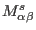
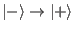
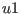
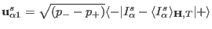
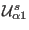
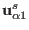
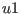
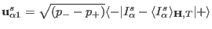
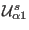
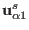

Next: External module function estates Up: Basic Module Functions Previous: External module function Icalc_parameter_storage_matrix_init Contents Index
The external single ion module has to provide the components nofcomponentsxnofcomponents
matrix
 (see equation (230)) for every transition
which is to be taken into consideration
in the calculation. Note, in general
it is a quadratic matrix with the same
dimension as the vectors  and Hxc.
Actually it is not necessary to compute the whole Matrix
, because
only the first eigenvector is needed in the computations.
Thus, in order to make calculations easier and provide a unique phase of the eigenvectors, the
external single ion module must return not the Matrix but the unnormalized
eigenvector , which is given by equation (232):
.
Note that in contrast to
 the eigenvector
 is not normalised (no !)
and thus the matrix
may be recovered from it.
and Hxc.
Actually it is not necessary to compute the whole Matrix
, because
only the first eigenvector is needed in the computations.
Thus, in order to make calculations easier and provide a unique phase of the eigenvectors, the
external single ion module must return not the Matrix but the unnormalized
eigenvector , which is given by equation (232):
.
Note that in contrast to
 the eigenvector
 is not normalised (no !)
and thus the matrix
may be recovered from it.
The format to be used is:
extern "C" int du1calc(int & tn,double & T,Vector & Hxc,Vector & Hext,double * g_J,Vector & MODPAR, char ** sipffilename,ComplexVector & u1,float & delta, int & n, int & nd, ComplexMatrix & est)
The meaning of the symbols is as follows:
on input
|tn| transition-number
sign(tn) >0 standard, <0 routine should do some printout to stdout for user information
MODPAR Vector with Parameters read in single ion property file
sipffilename file name of the single ion parameter file
g_J Lande factor
T Temperature[K]
Hxc vector of exchange field [meV] (can be n-dimensional, for a set of n operators)
Hext external magnetic field [T]
est eigenstate matrix (initialized by estates)
it should/may also contain population numbers of the states
(imaginary part of row 0)
and eigenvalues (real part of row 0) with values set by the most recent call
for this ion (use of this matrix is optional)
u1(1) ninit + i pinit (from mcdisp options -ninit and -pinit)
delta upper boundary for transition energy (meV) to be considered
(from mcdisp option -maxE)
on output
int total number of transitions
delta transition energy [meV]
n,nd initial and final level
u1 vector u1=<-|Ialpha-<Ialpha>|+>sqrt((p- - p+))
note that as in Icalc the single ion momentum vector <-|I|+>
(n- dimensional with n>=1)
may be an arbitrary set of operators
The module function must perform the following tasks: